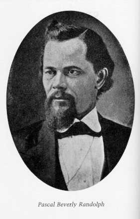
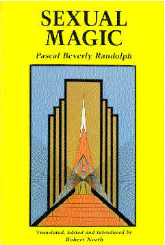
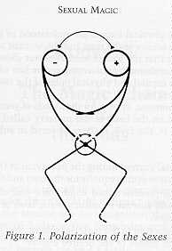
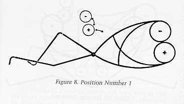
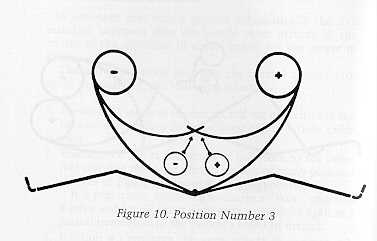
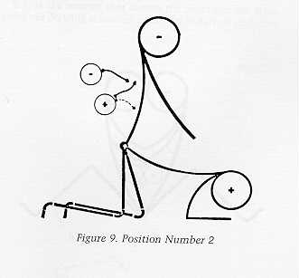
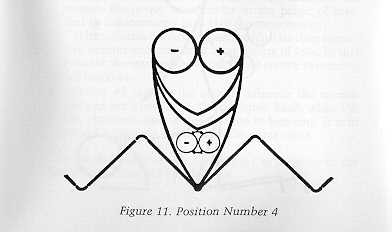
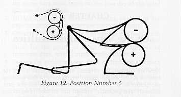
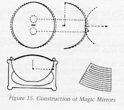
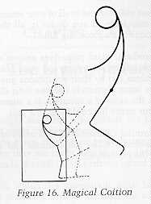

by Edward James
The appearance of this important work should serve to awaken renewed, and intelligent interest in the often discussed area of sexual magic in the Western tradition. On a more technical note, it reveals a clear relationship between Randolph's works and the writings of Franz Bardon. Fluid and solid condensers, flashing colors, and a complex use of magical mirrors were seldom, if ever, mentioned in occult literature in the eighty or more years dividing the two writers.
It is also of interest to note the possible relationship between PBR, as he was known to his friends, and the emergence of the O.T.O., O.T.O.A., and lesser known magical orders, having Templar and Masonic involvements. John Yarker, a British Masonic leader, who held numerous documents giving him the authorization to grant charters for a number of Hermetic, Masonic and Templar type Lodges, granted a charter for the formation of a Templar Order to Karl Kellner, about the year 1887. Occult historian Francis King believed that these charters came into Yarker's hands through the United States from France.
The America - England connection can easily be explained when we consider the fact that PBR traveled frequently between the U.S., France, and England. He, in fact, by 1870, had established the Hermetic Brotherhood of Luxor in both England and Europe, along with a small circle of initiates in France who practiced almost exclusively his socio-sexual dictates for magical living as indicated in his work Eulis and other instructional novels. The German historian, Karl R. H. Frick, suggests that President Lincoln, General A. H. Hitchcock, and other notable Americans were members of the Brotherhood of Eulis, or the Hermetic Brotherhood of Luxor, during the period embracing the Civil war. In England and Europe, Francois Dumas (son of author Alexander Dumas), Eliphas Levi, Kenneth Mackenzie, and Hargrave Jennings were considered students of his teachings. It is held that Madame Blavatsky was a member of his Hermetic Brotherhood of Luxor but later became a life-long antagonist of PBR over the issue of secrecy in the presentation of occult truths to the masses.
It is believed that a document giving in a practical form much of PBR's sexual practices was in circulation among the German magical circles as early as 1868. These practices were most likely passed to Karl Kellner in 1895 when he received a charter to form the O.T.O. In 1912, after the death of Kellner, Theodor Reuss assumed leadership of the Order, but it is unclear if the practical sexual magical materials were passed to him. Reuss, along with Hartmann and Klein were given a charter in 1902 to establish the Grand Lodge of the Ancient and Primitive Rite of Memphis and Mizraim from John Yarker. This charter appeared not to have been successfully managed and little is known of this reformed Order until it appeared to be associated with the O.T.O.A. in Spain in the 1920's.
It is reported that Encausse gave a charter for the O.T.O. to function in Haiti in 1910. This Order was created in December of 1921, and appeared to have the sexual practices of PBR, and contain additional Gnostic and Voodoo sexual rites. This Order, it is reported, continues to exist both in Haiti and Europe, and had issued an American charter in the recent past. R. Swinburne Clymer, one of the founders of the American Rosicrucian movement, based his philosophy directly on PBR's teachings. Certain Black churches of Chicago base their methods directly on magical healing and related rites used and introduced into their ministry by PBR.
One could cite other contributions of this man to the growth and functioning of the Western Magical Tradition - this is not our aim. We hope that someone in the near future researches and presents to us the story of his life and times in a full length work. To all of us students of the Hermetic Way, Pascal Beverly Randolph has left his favorite affirmation - Try! New York City April 1990
by Robert North
The circumstances of my translation and study of Sexual Magic have been
rather unusual and so I will attempt to recount them as accurately as possible.
In
the summer of 1987, I was living in the city of Providence, Rhode Island; that
demon-haunted metropolis favored by Edgar Allen Poe and H.P. Lovecraft in
earlier times. Years before, I had heard rumors of the magical teachings of P.B.
Randolph. But the only evidence that I had been able to discover was a 1939
reprint of Ravolette. This proved to be a rather slow novel, in the florid style
of the nineteenth century, with a long, elaborate introduction by a seemingly
right-wing Christian occultist of doubtful literary talents and even more
doubtful perceptions. Consequently, I left Randolph for the more stimulating
company of Aleister Crowley and Franz Bardon.
By the summer of 1987, I considered myself well versed in the western magical tradition. Some twenty years of continuous study of Agrippa, Dee, Levi, the Golden Dawn, the O.T.O., Bardon, A.O. Spare, Gardner, Voudoun, and Tantra had led me to believe that I had attained to a real understanding of Magick. It was summer and time for a vacation. Montreal, Canada was suggested and it seemed like a good idea. Our journey to Montreal was wonderful, stopping to mine Herkimer "diamonds" (quartz crystals) only a few miles from the original site of the Oneida Commune and passing through Gamet Hill in the Adirondacks, where abandoned Gamet mines still yielded a few glistening treasures.
On arriving in Montreal, I attempted to contact several addresses of "magickal" persons that I had obtained ten years previously. None of them still resided in Montreal. On the third day of my visit, my companion told me, "You must become intuitive and calm if you would attract the adepti. " Consequently, in a passive, meditative state, I strolled down Rue St. Denis, a potpourri of sidewalk cafes and boutiques, reminiscent of Paris. After a time, I looked across the street and saw a sign reading "Cafe Theleme." My companion remarked, "It must be a Greek restaurant," but we examined the premises and found it to be a veritable Temple of Magical Wisdom.
This was the beginning of an initiatory experience of which I cannot give
many details, but suffice it to say that a certain book was delivered into my
hands.
This book was, of course, Magia Sexualis by Pascal Beverly Randolph.
It was entirely in French and I was charged with the task of bringing this work
to the English speaking world.
The events surrounding my translation were
quite mysterious. I met many brothers on the magical path. Some were secretive
and seemingly uncooperative. Yet others were cordial and marvelously helpful.
Most of all, it seemed as if Randolph's spirit was continually present, both
guiding and restraining.
Perhaps the greatest mystery of the book was the
language that it was written in. The printed edition that I had was published by
Guy Le Prat of Paris. It purported to be a French translation by a certain
Maria de Naglowska of an English original by Randolph. However, repeated
letters to the publisher and translator resulted only in a terse response that
they possessed only the French translation and thought that the English
original must be available in the U.S.
This response felt like a deliberate
blind. As my translation progressed, I became increasingly aware of the
distinctly nineteenth century French style of the prose. Certain puns in the
French appeared. [example: in chapter X, the second page, "it also comes
toward god and perfection": comes was my translation for the French "êlancer",
meaning "to throb, to twinge; to rush, spring, dash; to spurt out."
This passage refers to the divine nature of the orgasm. Either Maria de
Naglowska was an incredibly inventive translator or—this was the French of
Pascal Beverly!) Another interesting discovery was a definite change of style
in the section on Magnetic Mirrors. The commonly used expressions are
different and the Mirrors section speaks in metric terms of millimeters rather
than the inches and feet that are dealt with in the earlier three sections.
Moreover, the narrator speaks of New York and then speaks of things also
happening "in this country" (France?) in Chapter XIX, tenth page.
On
completing my translation, I could not help but conclude that I was
translating the French of PBR! It is not inconceivable that he would have
written of the "forbidden" subjects of sex and drugs in French to
confound his American detractors. In fact, I am led to theorize that Randolph
wrote the first three sections in French while in America. The final section
on Magnetic Mirrors must have been a lecture given in Paris, hence the change
in style.
Furthermore, I must conclude that one person in 1981 could not have translated this book from English into French. The changes in style, the puns and the literary style render this highly unlikely. While I cannot offer absolute proof for my theories, I feel that I am justified in my suspicions. So, once again, mystery surrounds the image of Pascal Beverly Randolph. Perhaps it should be so. For if the magician seeks to become the microcosm of life, of that great macrocosm of all manifestation, should he not be clothed in mystery?
Of all the magicians, philosophers and poets of the nineteenth century,
there can be no more mysterious figure than Pascal Beverly Randolph. He was
famous in his own .time for his novels and his theoretical treatises in pioneer
areas of medicine and psychology. He numbered among his friends such persons as
Abraham Lincoln, Napoleon III, Eliphas Levi, Lord Bulwer-Lytton, Charles
Mackay and other notables of the day.
Yet, he veiled himself in such
impenetrable secrecy, that almost nothing about him can be stated as fact. A
wealth of myth and legend surrounds this intriguing man, whose personal life
was so complex and habits so secretive, that we may only guess at the story of
his career. Randolph published over twenty books in his lifetime and speaks of
his life in many of them. But almost everything he wrote was coded in such a
way that it could be understood on several levels.
If Pascal's life had a
theme, it was Love. His personal motto was "Try" and he signed at
least one of his photographs "Stand for the Right! " He was an
advocate of women's rights long before it was a popular stance and he was a
real pioneer in sexual therapy. He held a strong belief in supernatural forces
and was outspoken in his desire to investigate such things scientifically.
Yet
throughout his life, PBR was persecuted for his progressive thinking as well
as for his mixed racial heritage.
Pascal Beverly Randolph was born on October 8, 1825 at #70 Canal Street in
New York City to Flora Beverly and Edmund Randolph. 1 It seems unlikely that his
famous father was in attendance or, for that matter, ever met him.
Edmund
Randolph had been the Governor of Virginia and attended the constitutional
convention during the birth of the United States. He had served as
Attorney-General in Washington's first cabinet and in 1794, Secretary of State.
2
Flora Beverly may have been a black princess from Madagascar or a native
American from Vermont. Whatever the truth of the matter, her marriage with
Randolph was short lived and she was left to raise little Pascal by herself. PBR
describes her in glowing loving terms as a seeress, a dreamer and a beauty. 3
She
raised her son in a "large, somber and gloomy old stone house on
Manhattan Island" 4 and one imagines that she may have lulled him to
sleep at night with many strange and fantastic stories. This may have been the
source for the legend of Dhoula Bel, the King and the Stranger, 5 a story
which Randolph held to be of supreme importance throughout his life. Her
melancholia and longing for his father may have been the motivation for his
never ending crusade against abusive marriages, common in the nineteenth
century.
"She loved him as the apple of her eye" 6 until, in
Pascal's fifth year, she died from an epidemic—yellow fever, smallpox,
cholera; there were many in those times of pestilence. The event had a
tremendous impact on the boy and a few years later, in the orphanage where he
was placed, young Pascal had visions of his mother returning from the dead.
She told him, "Let thy motto be—Try! Despond not, but ever remember
that how bitter soever our lot may be, that despite it all WE MAY BE HAPPY
YET!" 7 On one occasion he and several other children witnessed a
materialization of his mother's form as well as poltergeist activity.
"From
his father our hero inherited little save a lofty spirit" 8 and Pascal
was left to grow up on his own. He taught himself how to read and write,
copying letters from printed posters and billboards. 9 At eight years of age
he was christened in the Roman Catholic church with the name of Beverly.
It must have been a hard life for a parentless child in 1830's New England.
In 1837, at the age of twelve, Randolph shipped aboard the brig "Phoebe"
in New Bedford as a cabin boy. 10 This was the beginning of a life at sea that
lasted for eight years—a period that Randolph would remember as miserable
and painful.
But the life of a sailor is an education in many things, and
when PBR finally came ashore, he was a wiser and stronger man for his
experience. During his time at sea, he was bullied and no doubt teased about his
mixed blood. His health often suffered, yet he was not beyond playing a prank
or two himself on his shipmates, such as substituting a laxative for a prized
bottle of rum or spilling hot grease on his tormentors."
At sea, he
heard many tales of the supernatural during the long watches and his interest in
things occult was firmly established. Sea duty took him all over the world and
Randolph learned bits of many languages, even becoming fluent in French. It
was a brutal, but international education.
Finally, at twenty, PBR injured himself in a wood chopping 12 accident and
found himself unable to work aboard ship. He came ashore once and for all and,
as many sailors have done, wandered aimlessly for several years, seeking his
true path.
The year that Randolph came ashore, 1848, was the time of the
famous Hydesville rappings, which gave birth to the nineteenth century phenomena
of Spiritualism. In Hydesville, New York, three sisters named Fox claimed to
be in communication with the spirits of the dead. It was widely publicized and
soon the possibility of communication with the dead became one of the most
widely discussed topics of the day.
Randolph, like many of his
contemporaries, was fascinated with the subject and studied it intensely. He
also studied the doctrines of a Viennese doctor, Franz Anton Mesmer. This was
the study of animal magnetism, or mesmerism, which involved making magnetic
passes with the hands around the patient's body and the use of a large bath tub
containing bottles filled with magnetized water and iron filings, from which
protruded iron bars which patients would hold to receive a magnetic charge.
Mesmer's theories of magnetism and polarity deeply influenced Randolph, who
would later expound his own theories of fluid condensers and volts.
After
four years of wandering, we find PBR working as a barber in either New York
City or a rural New England village, as the case may be. 13 He began speaking
before small groups of people on the subject of spiritualism and most likely
acted as a medium. However, he eventually condemned mediumistic practices and
consequently alienated many of his followers. Or, as he put it, "ten
thousand daggers were leveled at his heart, ten thousand tongues defamed him."
14 This was a great turning point in his life for at this time, it seems,
Randolph became convinced that the supernatural must be studied scientifically
and this remained the central theme of his work for the rest of his life. He
turned his attention to the study of medicine and the making of elixirs.
His
medical education remains rather shadowy, but in 1854 PBR set up a medical
practice on Boylston Street in Boston and appended M.D. to his name. 15 He kept
an alchemical laboratory in his offices and manufactured several elixirs
there. The most popular was called Protozone, which replenished "the
waste of vitality in the human system" and had wonderful "power over
morbid states of mind and body." 16 He also seems to have run a small
publishing business from his offices.
His medical practice led him to
experiment with consciousness altering drugs—opium, belladonna and many
others. He also began to speak out on issues of sexuality. His candid and open
views on these two issues, drugs and sex, drew much criticism and resulted in
persecution from many quarters in later years. However, for some eighteen
years, PBR enjoyed a great deal of success.
In 1861, at the outbreak of the American Civil War, Dr. Randolph visited
California, where he lectured for ten weeks on Rosicrucian doctrine and
established the first Rosicrucian Lodge in that state. After this, Randolph
departed for foreign shores, "traveling through England, Scotland, Ireland,
France, Malta, Egypt, Arabia, Syria, Palestine, Turkey, Greece, and other
countries " 17
In his writings he hints that he received high
initiations into the Grand Dome of the Rosicrucians in Paris. He visited the
famous French mage, Eliphas Levi and reports that in 1861, he participated in
secret Rosicrucian rites with Napoleon III and Eliphas Levi.18 While on this
trip he compiled material for his famous work, Pre-Adamite Man, dedicated to
Abraham Lincoln, rumored to be a close friend. 19
On his return to Boston,
PBR offered his services to the US government and raised a regiment of Black
Union soldiers, known as the "Fremont Legion." 20 Presumably in reward
for this action, President Lincoln sent him to Louisiana, where he was later
appointed Principal of the Lincoln Memorial High Grade and Normal School, a
school for freed slaves. 21 During this time, Randolph witnessed and studied the
"Rites of the Black Voudeux" 22.
In July 1866, PBR returned to
the Northern States to raise money for his school. He lectured throughout New
England and made a bid for a career in politics at the Philadelphia Convention
of Southern Loyalists. But it seems that even the post-war North was not ready
for this politician of color. Randolph grow disgusted with politics and returned
to his practice of medicine and publishing ventures in Boston. 23
Randolph's
method of attaining spiritual knowledge was known as the sleep of Sialam, or
shiloam. Shiloam, from the Hebrew Shiloah (literally, sending forth), was a
spring outside Jerusalem mentioned in the Bible (John IX.7). 24 Randolph would
fall into a trance and experience visions. This method was probably developed
during his spiritualistic period, although he referred to it as a Tibetan
method.
During his journeys to Paris, Pascal became aware of several works which
were being published in France and Germany dealing with the Ansaireth or
Nusairis of Syria. 25 There was much discussion, in the Rosicrucian circles that
Randolph traveled in, of the purity and sublimity of the teachings of the
Ansaireh. Books by Niebuhr, M. Catafago, Victor Langlois and others told of
these mysterious hill dwellers in Northern Syria who were neither Jews,
Christians or Muslims. They may well have been the people that modern
anthropology has identified as the Yezidi, the devotees of the Peucock god,
Melek Ta'aus.
PBR tells how the chief of the Ansaireth, Narek El Gebel,
arrived at the Rosicrucian Third Dome in Paris with letters of introduction and
then, recognizing Randolph's abilities and character, invited him to come to
Syria and to study with the Ansaireth. Randolph went to Syria and was initiated
into the Ansairetic Brotherhood. Upon his return to America, he established the
Priesthood of Aeth based on the Ansairetic Mysteries. 26
Another account
credits PBR with undergoing initiation in the Hermetic Brotherhood of Luxor, 27
a secret society that H.P. Blavatsky and Karl Kellner both claimed initiation
into. It remains open to question, however, whether these initiations took
place on the physical or the mental plane.
The following is quoted from
one of Randolph's last books, Eulis. It is highly significant as the
confession of a man, believing himself to be at death's door, concerning the
origins of his teachings.
"Very nearly all that I have given as
Rosicrucianism originated in my soul; and scarce a single thought, only
suggestions, have I borrowed from those who, in ages past, called themselves
by that name—one which served me well as a vehicle wherein to take my
mental treasure to a market, which gladly opened its doors to that name, but
would, and did, slam to its portals in the face of the tawny student of
esoterics.
"Precisely so was it with things purporting to be
Ansairetic. I had merely read Lydde's book, and got hold of a new name; and
again mankind hurrahed for the wonderful Ansaireh, but incontinently turned up
its nose at the supposed copyist. In proof of the truth of these statements,
and of how I had to struggle, the world is challenged to find a line in my
thought in the whole 4000 books on Rosicrucianism; among the brethren of that
fraternity—and I know many such in various lands, and was, til I resigned
the office, grand Master of the only Temple of the Order on the globe; or in
the Ansairetic works, English, German, Syriac or Arabic. ' 28 If we consider
that Randolph's Rosicrucian and Ansairetic teachings form the basis of modern
magical tradition and that they were written some twenty-five years before the
founding of the Golden Dawn, his death bed confession may be seen as the key
to the origin of modern magic!
Whatever his contacts on the inner planes were, we do know that he founded
a society on the physical plane in Boston in the year 1870. Its headquarters
were in his offices on Boylston Street and its name was the Brotherhood of
Eulis. Its members included several other doctors who wished to investigate the
supernatural in a scientific manner. 29 They utilized sex and consciousness
altering drugs and for this reason kept their teachings secret.
Rumors and
gossip of nefarious doings spread, however, and Helena Petrovna Blavatsky, later
to found the Theosophical Society, denounced PBR, accusing him of having
betrayed the Sacred Traditions. 30 An occult war between the two followed.
Blavatsky championed the "moral" spiritualist cause while Randolph
maintained the need to scientifically investigate the mysteries of sex and
magic.
Then, in 1872, disaster struck. On a tip from his enemies, his "Rosicrucian Rooms" on Boylston Street were searched by the Boston Police and he was arrested for distributing "free love" literature. During a brief stay in the Boston jail, he was persuaded to assign many of his copyrights to some ne'er do well opportunists. At his subsequent trial, he would be found not guilty of the charges, but his troubles were just beginning. 31
The Great Boston Fire devastated the city, completely destroying Randolph's
offices. 32 His laboratory was destroyed, the plates of his books were
destroyed, nothing was left. He was denounced as a libertine by the
spiritualists and his friends began to turn their backs on him. One acquaintance
invited him to stay with him after the Boston fire, only to extort money from
him. 33 In another instance, a man and a woman known to him drugged his beer
with morphine and robbed him, forcing him to sign false papers at gunpoint. 34
The details of these tragedies remain sketchy, but there can be little doubt
that his world was crumbling around him.
Penniless and outcast, Randolph
finally found sanctuary in Toledo, Ohio. He was a broken man. In May, 1873, he
suffered a railroad injury 35 and began to view death as imminent. He had lived
at the pinnacle of success and now existed in the depth of despair.
However,
one bright spot was still to touch his life. He was to meet and fall in love
with a young girl. She may well have been active in women's rights for by
September, Randolph writes, "I attended a convention of Ultra Radicals in
Chicago, led by a noted agitatress . . ." 36 PBR had always been a
supporter of women's rights, maintaining that if there was a society for the
prevention of cruelty to animals, there should be an organization to protect the
rights of battered wives.
Randolph and his love were married in Toledo and
in 1874 they welcomed a son, Osiris Budh, into the world. Randolph continued
to publish books from Toledo and to promote the Brotherhood of Eulis, but he
could never regain the grandeur of his life in Paris and Boston.
Finally,
on July 29, 1875, he shot himself through the head with his revolver. 37 His
followers claimed that the curses and black magic of H.P. Blavatsky had
finally taken their toll. It is interesting to note that Blavatsky founded the
Theosophical Society in the same year.
There was a later book published in 1878. "Beyond the Veil" was channeled from beyond the grave by two ladies from Toledo, F.H. MacDougall and Luna Hutchinson, but it lacked the vitality of many of his other works. 33
His wife and son lived on in Toledo. In fact, Osiris Budh Randolph graduated
from Toledo Medical School in 1898 and established offices at 625 Adams
Street. He and his family continued to live with his mother at 23 Melrose
Avenue. Many years later, R. Swinburne Clymer would visit them to learn about
Randolph's work. 39 It seems likely that, in an effort to "whitewash"
his memory, they concealed all teachings relating to sex or drugs, emphasizing
only his "moral" teachings.
Clymer reprinted many of Randolph's
books from his headquarters at "Beverly Hall" in Quakertown,
Pennsylvania. He also published a book, The Rosicrucian Fraternity in America
40 which ironically attacks a German group known as the O.T.O. for practicing
sex magic and praises PBR for his pure teachings. Karl Kellner, the founder of
O.T.O., seems to have derived many of the O.T.O. teachings directly from
Randolph's instructions for the Brotherhood of Eulis.
Randolph's magical teachings have influenced a great many practitioners of the magical art, but usually in an occult, invisible manner.
The writings of Franz Bardon have become quite popular. Bardon was a close friend of Wilhelm (Rah Omir) Quintscher, with whom, in fact, he was imprisoned by the Nazis. 41 Quintscher had been a member of an offshoot of the O.T.O. known as the Fratenitas Saturni, lead by Eugen Grosche. Quintscher had reached the eighth degree grade of Gradus Mercurii but quarreled with Grosche and resigned. It is interesting to note that the second, third, and fourth degrees use the word "Scholar" in their title. 42 Readers of Bardon's work will be familiar with the frequent use of that term by him. Any perusal of PBR's Sexual Magic and Bardon's Initiation into Hermetics will reveal a great many similarities.
It is possible to follow the trail of Randolph's teachings to a great many
modern writings on magic. The student of the Golden Dawn will recognize the
original of the "flashing colors" exercise in the Volantia chapter of
Sexual Magic. 43
Those who seek the original source of these things must
look to PBR's magnum opus, Sexual Magic. It is said that during his lifetime he
printed only sixty copies and entrusted them only to his most select students.
Herein is the wisdom which has remained hidden for over one hundred years. Is
the time ripe for its unveiling? Let us look for the answer in Pascal's own
words:
"We grow daily beyond our yesterday's and are ever reaching forth for the morrow. The world has had a long night, as it has had bright days; and now another morn is breaking, and we stand in the Door of the Dawn." 44
(p=page of the relevant section in North's reprint.)
[Annotations
by PA]
[Please notice that Randolph attributes the positive pole to women and the
negative pole to men in the mental plane.]
[Please notice also that Randolph
speaks only of the "positive or negative MAGNETIC pole (fluid)" but
never of the electric fluid.]
In effect, the entire universe, all living beings, without the least exception, are ruled by the principle of two contrary forces, exercising, one or the other, a power of inescapable attraction. One calls the forces positive and negative, and one rediscovers them in good and bad, emission and reception, life and death, idea and action, man and woman (positive and negative magnetic poles) in the material plane and, conversely, the woman (active pole) and man (negative pole) in the mental plane. In the science of the mysteries that we teach, just as in nature, the female attracts the male, so we can attract to ourselves the desired form by creating the negative in order to attract the contrary, the positive!
Therefore, while the phallus of the man is positively polarized and the kteis of the woman is negatively polarized, the head of the man, the organ of his mental manifestations is, to the contrary, negative and magnetic for rapport with the head of the woman which is positive and electric.

[Please notice that Randolph knows only the "charging of Volts" by sexual magic.]
In the preceding pages, the reader can study rules and principles which make possible, with proper application and execution, the realization of formidable things. We now pass on to sexual operations so-called, which cannot be efficacious without all that has previously been explained. These operations are the basis of the mysteries known under the name "Mahi Kaligua, " and derive from the Euclidian principle that we spoke of at the beginning of this work. One can practice this for many diverse reasons, but we limit ourselves to these seven principles:
Supposing that the student has studied and understood all that we have revealed in the preceding chapters, we give, hereafter, the twenty principle rules that are necessary to learn in order to properly understand the special exercises of sexual magic.
[and so on ... please refer to the book.]
[See also "Volts and Statuettes" below.]
|  |  |
|  |  |
|  |
Magic is a science. It is the only science which occupies itself,
theoretically and practically, with the highest forces of nature, which are
occult. It declares and proves that the universe, in its totality as in each of
its smallest parts, is subject to certain fluid influences and that science can
prove this, the day that it will, to be the basis of all psychic and physical
phenomenon.
To operate with these forces, according to the laws which
regulate them, it is necessary, first of all, to concentrate them in a point or
on a given surface. One can, then, guide and channel them at will.
These
operations, which are very important and which offer the possibility of many
varied realizations, can be made in four different fashions:
This last procedure has been known for thousands of years as talismanic
magic. It is also used for that which is called "The Charging of Volts,"
which we have spoken of in a preceding chapter.
Meanwhile, in verifying the
technique of these preparations, we have found that in practice, a shortage of
laboratory knowledge often induces one to use insufficiently pure materials for
the condensation of the fluids. Also, quite often, only some of the
necessary materials are chosen, thereby giving the formula only partially and
diminishing the efficacy of the talismans and "Volts."
To avoid
this error and to obtain, henceforth, perfect results, we have studied and
completed three types of irreproachable fluid condensers—two liquid
and one solid —which all may use satisfactorily.
| Liquid Condenser for painting on | (amounts in grams) |
| White Wine | 120 |
| Juice of leaves of Lily | 4 |
| Juice of leaves of Mandrake | 18 |
| Juice of leaves of Chamomile | 19 |
| Juice of leaves of Poplar | 48 |
| Coal of Poplar | 15 |
| Extract of Lily | 2 |
| Extract of Mandrake | 3 |
| Extract of Chamomile | 1 |
| Extract of Poplar | 4 |
| Lactose (milk sugar) | 50 |
| Lactucarium (coal of the leaves of Atropa and Belladonna.) | 25 |
| Gelatin | 80 |
| Kopal Oil | 25 |
| Liquid Condensers for bottles | (amounts in grams) |
| Juice of leaves of Lily | 2 |
| Juice of leaves of Mandrake | 8 |
| Juice of leaves of Chamomile | 9 |
| Juice of leaves of Poplar | 20 |
| Extract fro flower of Lily | 3 |
| Extract of Mandrake | 13 |
| Extract of Chamomile | 5 |
| Extract of Poplar | 32 |
| Lactose (milk sugar) | 60 |
| Lactucarium (see above) | 36 |
| Solid Condenser | (amounts in grams) |
| Coal of Mandrake | 80 |
| Iron | 20 |
| Brass powder | 15 |
| Gold | 40 |
| Lactose (milk sugar) | 18 |
| Lactucarium (see above) | 80 |
| Coal of Poplar | 16 |
For these drugs to act as one wishes, it is necessary to conform, in their preparation, to the following recommendations:
All experimental magic is based on the laws of correspondences, of sympathies and of polarizations. While the laws of polarizations determine the force of attraction between the two contrary poles ( + and - ), the laws of correspondences and of sympathies exist for all the etheric forces, spread out through space and on the earth; their elements, or materials, correspond in the same manner as their sound, their color, their rhythm, and their perfume, sympathetically.
The profound study of these diverse correspondences allow us to successfully
operate with the aid of solid fluid condensers (type 3), which we call "Volts."
These
condensers are figurines, prepared in a special fashion (see more below). They
are charged, according to the method that we indicate here, with the psychic
force of an individual in order to cure an illness, to correct or improve a
person's nature, or even to cast a spell, beneficial or malefic, with the aid of
the laws of Correspondences and sympathies.
The preparation of a "Volt"
requires the following operations:
[Bardon gives a similar method in IIH when he describes the destruction of an Elementar.]
See to it that it is touched only by yourself and the person for whom it is intended.
Don't forget that if a "Volt" breaks, the person to whom it is henceforth bound by an inescapable occult link, will die at the same instant. You have, therefore, in your hands, the life and death of the person, who confides themselves to you. You take on a solemn obligation and you must comport yourself with dignity.
One recalls historic cases during the middle ages when this method was used to wipe out many living persons, provoking the wrath of much power on earth. In more recent times, the same method has been employed to accomplish assassinations which remain inexplicable to justice. One finds, in certain cases, little wounds or punctures on the bodies of the dead that are not enough to justify death and one does not dream of finding an inhuman Mage, who amuses himself by perforating, with a needle or the point of a sharp knife, the flesh, apparently inert, of a statue whose occult link can turn life into death.
10. To neutralize the "Volt" and to annul its link with the subject, it is necessary to plunge it into water heated to 122 degrees Fahrenheit. For complete neutralization, the statuette must stay in the hot bath for three days. The temperature in the room must be stabilized at 60 degrees Fahrenheit.
11. Sometimes—although very rarely—the three days prescribed are not sufficient to eliminate all the effects of the "Volt" on the subject. In this case, the bath of the statue must be repeated one or two more times.
[Please notice Randolph's very interesting and original opinion about a fully balanced person.]
To prepare an individual fluid condenser, one establishes, first of all, the respective values of the forces and the planetary weaknesses. This, then, will reveal the scheme of the natal horoscope of the person with whom one is occupied.
Generally, one establishes an evident predominance of one of the planets over all the others, by a very strong numerical indication. Other forces are found to the contrary, to be in weakness and, often, have negative values. It is useful for the operator to fill in these gaps by means of the fluid condenser; by attracting to the subject the planetary influences which he lacks, accentuating and augmenting his insufficient faculties.
The horoscope of an perfectly balanced individual would give the same
numerical indication for all the planetary influences in the natal theme.
Expressed in colors, with the horoscope presented on a disk and divided into
seven equal parts, all the planetary shades would be united.
But an
individual thus influenced has no preponderant capacity and his life elapses in
a dreadful monotony. He brings nothing original, nothing of interest.
This
monster of equilibrium has no possibility of concentrating on a problem of any
kind for very long that is not strictly necessary for his physical existence. He
can never, then, develop in himself a mental current susceptible to training
for superior horizons. This is a mediocre, a man of small emotions and dead
aspirations, without passions or special characteristics. He does not awake fear
or love in another person and he give nothing remarkable to humanity.
We must be careful not to create an equilibrium thus monstrous in a person who confides themselves to us. Therefore, allow the force that rules to dominate and only intervene when the accentuation of a very weak faculty can be useful, without harming the originality of nature. We do well to recall that the horoscopes of geniuses are, often, catastarous.
Moreover, the more skillful operator never essentially modifies the specific character of this subject, for that which he can attract by means of a fluid condenser is never equivalent to a direct planetary influence in the natal theme.
This which we can do is to correct, to add to, to improve, so that it will be better afterwards. A weak memory can be fortified, shaky health improved, exaggerated bad luck softened.
But, quite often, to obtain the desired result, it is necessary to have recourse to the simultaneous exercise of Volantia, of suggestion and also of Posism, so that the action of the jewel may be truly efficacious. The preparation of planetary charts has been sufficiently described in the preceding chapters. The particulars concerning individual charges are as follows:
It goes without saying that the individual planetary charges can only be useful to the person when the horoscope has been consulted in the course of the different operations of fabrication. However, the owner of the magical jewel can utilize it, in certain cases, for influencing a person of the opposite sex, according to his desire.
Many Occultists of our time no longer know the possibility of seeing, in the magic mirror, persons and scenes evoked by the mage. They have forgotten this antique belief because their talents and insufficient science cannot permit them to establish, by this tempting experience, the confirmation of this fact, nevertheless real. The celebrated Dr. Dee of London, and many others before him, used, for this sort of vision, a concave mirror of blackened glass, and also other things, to attract the image or idea form the upper spheres, that they could not capture otherwise—the material age can only admit that a simple physical coefficient, that of the concave oval mirror, the crystal, or a drop of ink, may attempt to draw from the spirit that which the latter jealously guards in its impenetrable profundity. It is a material proof within the reach of all. We will strive to give it here.
We do not doubt that the Christian conception of the immortality of the soul conforms with truth. A thousand things prove it, and we know it as we know that the power which created the world is much stronger than the waves of the sea.
Certainly, there are true mediums in the world, who know how to place themselves in rapport with departed souls. But for each one of them, there are innumerable men without hearts, practical jokers who dream only of filling their pockets with the stolen gold of credulous, ignorant persons. They have effaced occultists before a crowd of fools.
If you want to use a magic mirror, don't forget the following roles:
In figure 15, we give an exact diagram for the construction of the magic mirrors which are called "special". One may make many variations of detail with these, according to the goal for which the mirror is destined. We distinguish four principle categories of this type of mirrors:

[Please refer to the book for further explanations and construction guidelines.]
We distinguish four types of magic mirrors:
[please refer to the book for details ...]

Under certain conditions, by scrupulously accomplishing the magical work that will be explained in this chapter, one can animate, that is to say render truly alive, certain portraits and statues, in order to influence one or many senses of a chosen man or woman. The influence, that one thus projects, can be mental or physical, indifferently.
The doctrine of Living Magical Pictures is not new. In the middle ages, certain painters knew it very well and applied it to their art; but, also, one finds cases where the human magnetic fluid is concentrated in an old portrait, forgotten in the corner of a salon of some feudal chateau through the monotonous years, until it is discovered to reveal scenes of violent passions. One also speaks of certain sacred paintings, made on the walls of Christian temples. They can become suddenly animated and exhibit real wonders.
Obviously, the will of the wise man initiated in the mysteries of the great
magical art can better and more surely create this than a fortuitous discovery.
The mages and sorcerers of the preceding centuries knew it and they studied this
problem thoroughly.
They teach, in their rediscovered writings, that an oil
paint, made with the oil of the poppy, is an excellent fluid condenser and a
gold guilded frame is a perfect insulator.
Fixed on the wall of a church, where persons kneeling in prayer often see
it, or hung on the silk drapes of a salon, where it is exalted in dreams and
violent passions, and artistic work may become, little by little, the true
center of life. The oil holds the human fluids and the guilded frame prevents
leakage of them.
We must not forget that some charlatans and other men of
bad faith have shamefully profited from this averred truth to gain money by
deceiving credulous clients; but this does not negate that which is nevertheless
true.
We possess many authentic grimoires in our lodge which tract of this
subject. When we read these ancient writings, it seems to us that sometimes the
green eye of the true magic of the Evil One flashes its terrible gaze at us.
For example, we find, in certain receipts, that a mixture of colors, to which has been added the blood of a fetus, which has been pulled out of the belly of its mother by the operation of the cross, is of a sublime efficacy. Of other receipts we see, that if one mixes into the paint some drops of the blood of a pure virgin, who is offered, after this, to the pleasure of a succubus, one may give formidable power to a living picture.
There are some drugs, recommended to painters, which contain a human
magnetic charge, to be used during solitary excitation. Their effect is
particularly malefic. Living pictures have been used through the dark ages to
perpetrate mysterious assassinations: An enemy, masked by the gentleness of the
gift offered, sends out death in a succubique picture, and the person receiving
the gift, who hangs the portrait in his room, will die soon after.
The Holy
Inquisition enforced an end to these terrifying abuses by burning the
manuscripts of the mages and persecuting the sorcerers. The entire science of
magic could have disappeared in this ferocious reaction of Catholicism but,
fortunately for us and for the future of humanity, they found some philosophies
which concealed the secret and were thus protected from the vengeful hands.
These were works that cultivated the magical art for pure motives of initiated
wisdom.
It is thus that one of our brothers, living in Spain in the first
half of the 18th century, was able to recover manuscripts containing some
receipts and counsels of great importance. This brother devoted ten years of his
life to these studies and researches.
[And so on ... Please refer to the book. ]
These principle teachings also permit the preparation of statues and other living sculptures. One makes them, most often, by sculpting in dark brown earth. When they are ready, one bronzes them. Next, one bathes them in the individual perfume mixed with the fluid condenser.
This bath, which is a maceration, must last for twenty days. After removing
it from the bath, the sculpture must dry for six days in a normal temperature.
When
it is completely dry, one gives it a coat of paint with the colors prepared as
for the living pictures. The hollowed out space of the statues must be filled
with a living liquid, that one knows of from the receipt and manner of
preparation. The opening through which one introduces this liquid is soldered by
means of an amalgam of gold.
Plaster, wood and porcelain are equally
recommended materials for this sort of statues. One can also use the materials
indicated for the preparation of "'Volts" with success.
The
prepared statue should be placed on an insulated stand, at a distance of ten
centimeters from the reflecting surface. One can find all other details
necessary for this preparation in Table A.
The magic of living Sculptures
was often practiced in ancient Egypt, Greece and India, where every day one saw
certain idols, haloed in gold with an incomprehensible destiny.